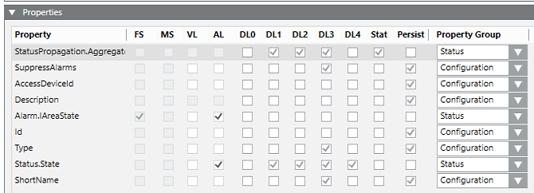
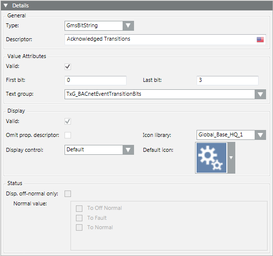
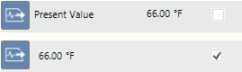
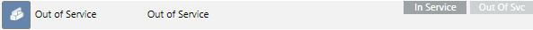
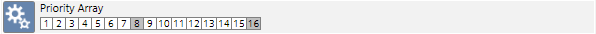
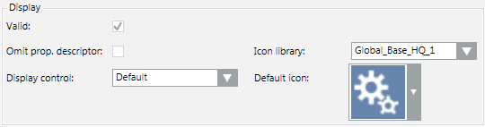
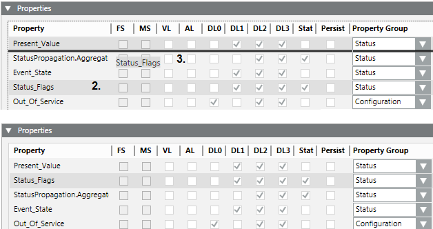

Configuring Properties in Object Models or Functions
In the Models & Functions tab, you can configure the properties of the object model or Function selected in System Browser. For reference information, see Properties Expander and Property Details Expander.
Define Logging, Visibility, and Security of Properties
NOTE: Settings marked with * are available only for object models, not for functions.
- In System Browser, select Project > System Settings > Libraries > [... ] > [object model or function].
- Select the Models & Functions tab.
- The Properties expander displays a list of all the properties of the selected object model or function.
- To configure logging for a property:
- Select the VL check box to enable value logging for this property.
NOTE: Trending data can impair your network communications. - Select the AL check box to enable activity logging for this property.
- Use the DL (display level) check boxes to set the visibility of a property (for more details, see Properties Expander).
- DL0* (Configuration: Engineering mode expanders).
- DL1 (Reduced: Status and Commands window in graphic).
- DL2 (Standard: Operation).
- DL3* (Details: Extended operation).
- DL4* (Exposed to north-bound interfaces such as OPC server)
- Select the Status check box if you only intend to display the off-normal state (the function is defined in the Details expander).
- Select the Persist* check box if you only intend to save the property value to have such value immediately available after a system restart.
- In the Property Group, select an option for the security setting:
- Status, Configuration, Diagnostic or Ownership.
- Repeat the preceding steps for each property you want to configure.
- Click Save
 .
.


The FS (field system alarm) and MS (Management Station alarm) check boxes cannot be selected here.
Configure Property Type and Value Attributes

- In System Browser, select Project > System Settings > Libraries > [... ] > [object model or function].
- In the Models & Functions tab, open the Properties expander.
- In the Property list, select the property you want to configure.
- Open the Details expander.
- From the Type drop-down list, select the data type for this property. Whenever possible select a Gms data type.
- The Value Attributes group box displays the configuration fields for the selected property Type.
- In the Value Attributes group box:
- Select the Valid check box to enable the configuration.
- Enter the values into the various fields, for example Min, Max, Resolution. For details, see Value Attributes for Different Property Types.
- Select the text group. New or updated text groups must be refreshed by pressing the F5 key
- Click Save .
It is possible that not all attributes of non-GMS data types are saved to the database during data import.
Set How a Property is Displayed
- In System Browser, select Project > System Settings > Libraries > [... ] > [object model or function].
- In the Models & Functions tab, open the Properties expander.
- In the Property list, select the property you want to configure.
- Open the Details expander.
- In the Display group box, select the Valid check box to enable configuration of the fields.
- In Omit prop.descriptor, set whether to omit or display the property descriptor:
- check box cleared: The property description, such as Present Value, is displayed alongside the symbol.
- check box selected: The description is not displayed.

- Select the Display Control as per the selected data type.
- Default

- Priority Array

- Event Time Stamp
- From the Icon library drop-down list, select the appropriate library.
- Select the icon under Default Icon. The selected icon is displayed in the viewers with the given property.
NOTE: The icon is overwritten if an icon is defined in the Enumeration or Boolean text group. - Click Save .

Configure Off-Normal Status for a Property
You can define what constitutes the normal status for a property, and whether to display the property always, or only when it is off-normal.
- In System Browser, select Project > System Settings > Libraries > [... ] > [object model or function].
- Select the Models & Functions tab.
- Open the Properties expander.
- In the Property list, select the property you want to configure.
- Select the Stat check box alongside that property. This enables configuration of the Status fields in the Details expander.
- Open the Details expander.
- In the Status group box:
- Define the Normal value for this property, as per its data type (GmsReal, GmsBitString, GmsEnum). See Normal Value Entry Fields.
- Select Disp. Offnormal only to display this property only when off-normal. Otherwise clear the check box to display this property always.
- Click Save .
Change the Order of Properties
You can customize the order in which the properties are displayed in Desigo CC.
- In System Browser, select Project > System Settings > Libraries > [... ] > [object model or function].
- In the Models & Functions tab, open the Properties expander.
- Select the property you want to move.
- Drag-and-drop the property to the desired location in the list.

- Repeat the process for all properties to be moved.
- Click Save .
To reset an edited sequence to the default setting, right-click any property and select Reset property list to original order.
NOTE 1:
Properties dependent on data type are removed if the data type is changed on an existing object model using the Models & Functions tab. This affects the Alarm Configuration, Function, and the applicable instances. The objects must be post-processed to function correctly.
NOTE 2:
A data type on an existing object model is highlighted in red in the Property expander if it is not changed using the Models & Function tab. Save the object model to refresh the instances using the default value of the newly selected data type.